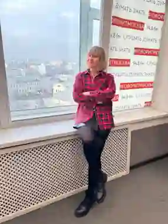
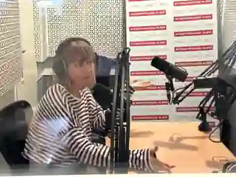

01
Ведущая форумов и конференций
Пленарные заседания, открытия, профессиональные форумы, отраслевые и корпоративные события.
Веду медицинские и фармацевтические мероприятия, модерирую экспертные дискуссии, беру интервью у врачей, учёных и руководителей компаний. Более 20 лет в радио и журналистике.

Работаю на стыке медицины, журналистики и публичной коммуникации. Помогаю экспертам говорить ясно, а аудитории — не теряться в профессиональном языке.

Веду медицинские программы на радиостанции «Говорит Москва» 94.8 FM, работаю с врачами разных специальностей, пациентскими историями, научными и общественными темами.
Моя сильная сторона — разговор: точный вопрос, спокойный темп и эксперт, который звучит убедительно без канцелярита и перегруза.
Ведение и модерация медицинских, фармацевтических и деловых мероприятий, интервью и авторские медиапроекты. Формат и задачи согласуем индивидуально.
Пленарные заседания, открытия, профессиональные форумы, отраслевые и корпоративные события.
Экспертные дискуссии, панельные сессии и диалог врачей, бизнеса и профессионального сообщества.
Содержательные беседы с врачами, учёными, руководителями компаний и организаторами медицинских проектов.
Авторские форматы о медицине и здоровье: от идеи и тем до записи интервью и готового выпуска.
Разработка концепции, сценария, вопросов, подбор экспертов и содержательное сопровождение проекта.
Медицинские и деловые события в России и за рубежом с русскоязычной аудиторией.
Стоимость ведения, модерации и медиапроектов обсуждается индивидуально. Коммерческие проекты не связаны с редакционными решениями радиостанции.
Награды за работу в социальной журналистике, заботу о детях и благотворительность.
Диплом Департамента труда и социальной защиты населения города Москвы. Подписан министром Правительства Москвы, руководителем Департамента Евгением Петровичем Стружаком.
Награда Уполномоченного при Президенте Российской Федерации по правам ребёнка. Удостоверение № 47 от 8 сентября 2016 года, подписано Павлом Алексеевичем Астаховым.
Почётная медаль Уполномоченного при Президенте Российской Федерации по правам ребёнка. Удостоверение № 41 от 8 сентября 2016 года, подписано Павлом Алексеевичем Астаховым.
Мультимедийный проект о здоровье без рекламной интонации и сложных формулировок. Врач, герой и журналист говорят о диагнозе, выборе лечения, страхе, качестве жизни, новых технологиях и границах современной медицины.
Просветительские циклы, тематические спецпроекты и форматы с мероприятий — с прозрачным обозначением партнёрства и разделением коммерческой и редакционной работы.

В студии важны не только факты. Важно слышать человека, вовремя задать следующий вопрос и перевести сложную медицинскую тему на язык слушателя.
Работаю и с опытными публичными врачами, и с теми, кто впервые оказывается перед микрофоном или камерой.

Я связываю позиции экспертов, задаю неудобные, но корректные вопросы и вовлекаю аудиторию.
Открыта к проектам в России и за рубежом: международным медицинским, технологическим и деловым мероприятиям с русскоязычной аудиторией.
Пригласить на мероприятиеОфициальные страницы программ и авторские площадки.
Помогаю врачам и клиникам яснее рассказывать о своей работе. Эти услуги можно обсудить отдельно от ведения мероприятий и медиапроектов.
Анализ профессионального позиционирования, публичных площадок, экспертных тем и возможностей для развития личного бренда.
Обсудить консультациюПозиционирование, темы для публичного разговора, рекомендации по экспертным форматам и план коммуникационных действий.
Обсудить задачуПрактическая работа с вопросами журналиста, поведением перед микрофоном и камерой, структурой ответа и уверенностью в кадре.
Обсудить подготовкуФормат и стоимость консультаций — по запросу. Публикации в СМИ и приглашения на мероприятия не гарантируются.
Ведение форумов и конференций, круглые столы, интервью, подкасты и медицинские медиапроекты. Дополнительно — медицинский PR и подготовка спикеров.